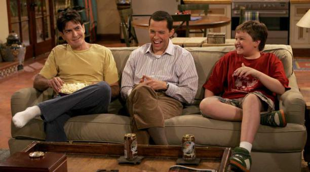
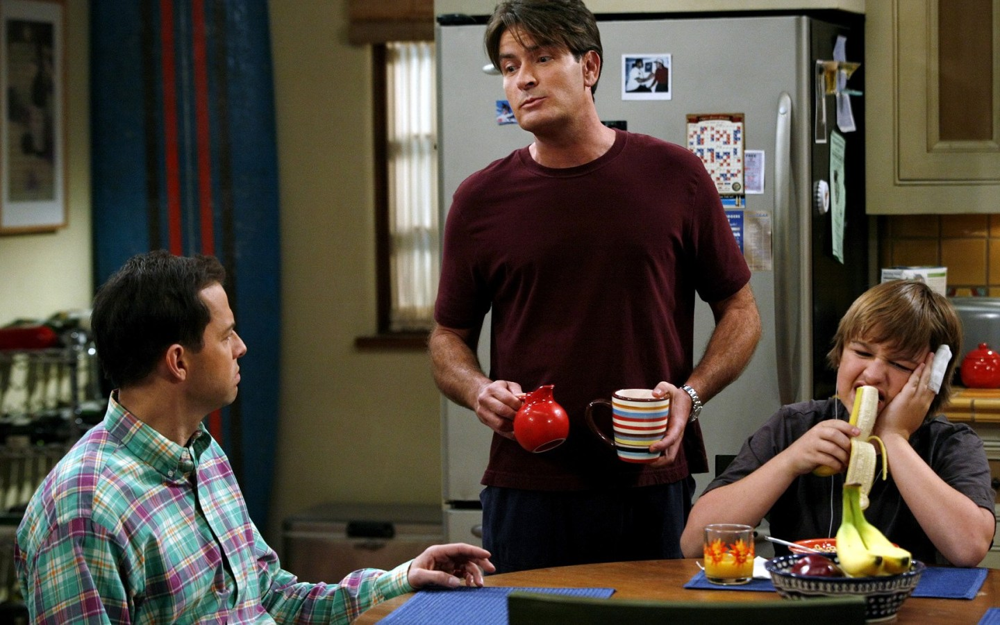
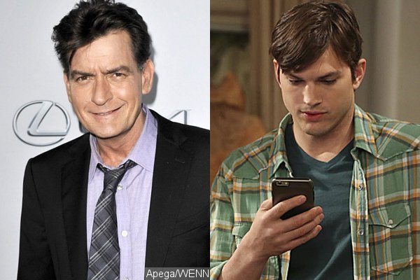
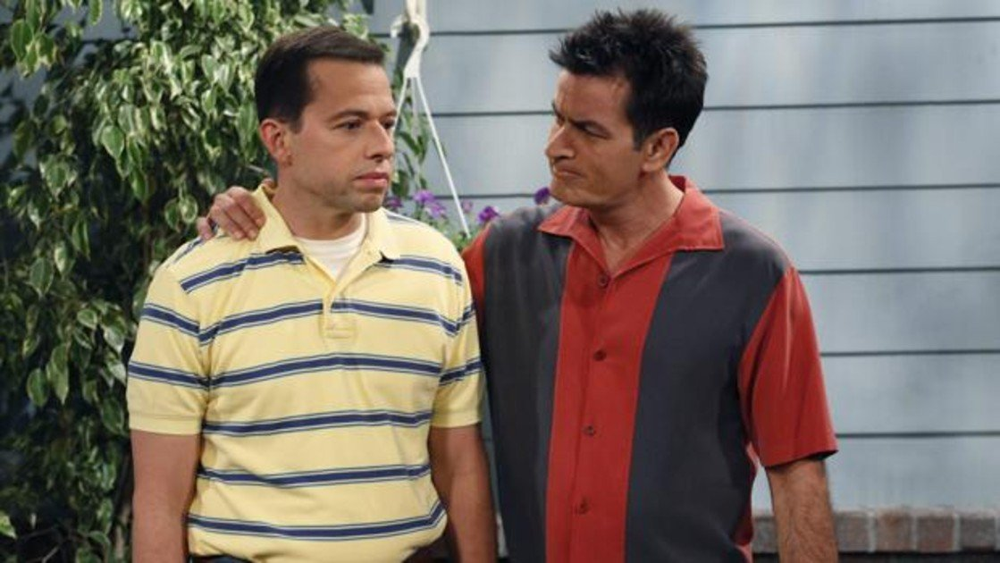
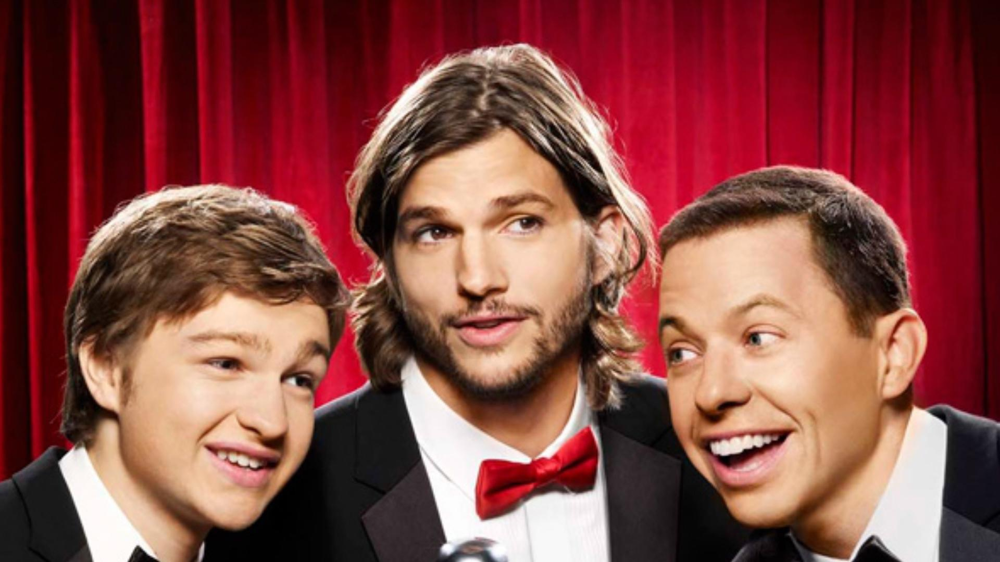
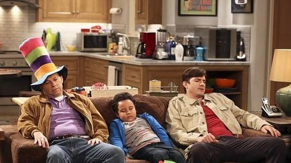

Two and a Half Men: y su terrible decadencia.
Tal vez de las sitcoms mas divertidas e importantes de la televisión fue "Two and a Half Men". Una serie estadounidense que duro mas de 12 años y aunque se gano el cariño del publico en las primeras temporadas su popularidad y su publico fueron cambiado por un drástico cambio en la serie (hablaremos mas adelante de eso) y que no solo afecto las ultimas temperadas de la serie si no también su final y aquí hablaremos de eso.
{kind=link}
El estilo de comedia
Algo que creo se nota mucho desde la 9 temporada es el nuevo estilo de comedia que se incorpora a la serie, dándonos un estilo mas...políticamente correcto y mas tranquilo..alejándose mucho de los chiste obscenos o vulgares que nos tenia preparados el personaje del buen Charlie Harper (Charlie Sheen)...que aunque no eran del agrado de muchos o aunque fueran aveces muy crueles(mayormente dirigidos a su hermano Alan interpretado por Jon Cryer) son realmente divertidos y buenos que le sacaban la risa a mas de uno. .
{kind=link}
El cambio de protagonista
Después de fuertes declaraciones que hizo el actor Charlie Sheen hablando mal no solo de la serie si no del creador de la misma (Chuck Lorre)...este causo el enojo no solo de los creadores si no también de los directores ejecutivos de Warner televisión , que causo el despido del actor justificando su salida en la serie..con su supuesta muerte a a manos de un tren en parís. Después de todo eso muchos creyeron que se le daría fin a la serie.....pero...no.....Warner trajo a Ashton Kutcher es su lugar como un joven,guapo y multimillonario programador que luego de intentar de suicidarse compra la casa y se convierte en en mejor amigo de Alan...que...para variar......lo deja vivir en la casa durante unos años mas.
{kind=link}
Alan Harper como personaje principal
No tengo nada encontra de el personaje de Alan Harper, aqui mi problema es que los guionistas forzan mucho el guion para que toda la trama a partir de la temporada 9 gire entorno a el (Como que para mi no deber ser asi y que esa no es la funcion del personaje) y si Jon Cryer es un gran actor al cual esta misma serie le dio varios premios...pero no llega a estar al nivel de carisma al que llega Charlie Sheen.
{kind=link}
Ya son ahora tres hombres
Algo que caracterizaba a la serie era la comedia tonta del personaje de Angus T. Jones (Jake Harper en la serie) que luego de la llegada del personaje de Ashton Kutcher se le vio a Jake muy poco durante los episodios teniendo solo pocas apariciones en ellas...y... también ahí que tomar en cuenta que el personaje ya no es un niño. Y teniendo un final un poco decepcionante para el personaje.
{kind=link}
Ashton Kutcher no fue suficiente
Algo que ya había mencionado anteriormente fue el cambio de protagonista..pero no lo había profundizado...la verdad es que Ashton Kutcher es un buen actor algo que demostró en Jobs (2013) en esta caracterización se le nota la presión que sentía al tomar las riendas de la serie pero con su cara bonita ni con su lastima de ser dejado por su esposa no consigue levantar la serie de ninguna manera arruinando casa un 1/4 de la serie en total con malas temporadas y dejando un final nada agradable.
{kind=link}
Pero algo que si tengo que admitir es que es de lo mejor que he visto en vida y tal vez de lo mas entretenido es una serie que a pesar de sus ultimas malas temporadas sigue siendo de las mejores sitcoms de la historia y un personaje que aunque se fue mucho antes de terminar la serie como lo fue Chalie Sheen ..siempre sabremos que el es lo mejor de la serie .